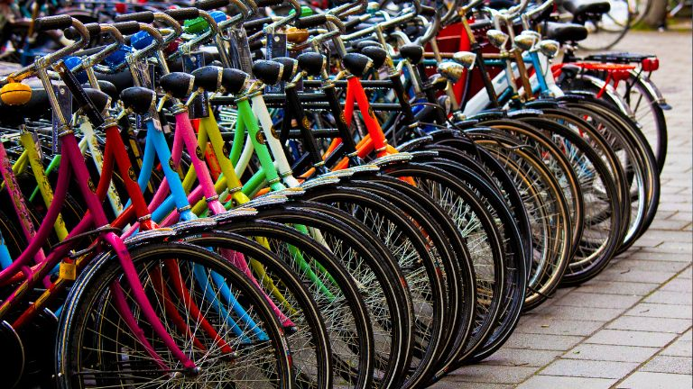

projects

Cyclistic Project
Made to conclude the Professional Certificate, this case study was a simulation of a complete business case. At this project you can find all the steps of a data analysis focused on a marketing campaign .
Report
Exploring Covid19 worldwide dataset
The analysis used two tables — deaths and vaccinations — to examine the lethality of the disease over time, evaluate its impact across countries, and calculate the cumulative percentage of the vaccinated population.
ScriptPenguins visualizations with R
Using the famous "penguins" package this Notebook explains how to create visualizations in R. Therefore, it is also possible to discover some curiosities from penguin species comparison.
Notebook